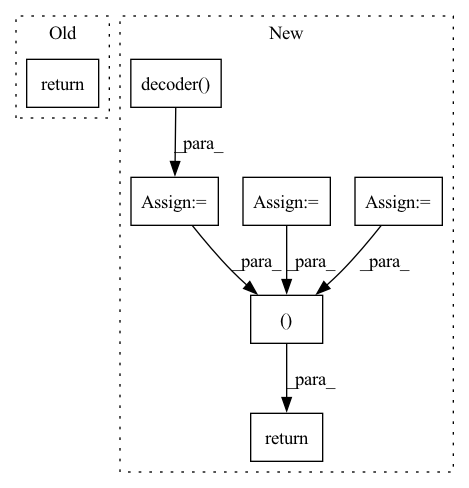

Pattern ID :15224

Before Change
super().__init__()
def forward(self, x):
return x
After Change
mems = default(mems, self.memory_slots)
if mems.ndim == 2:
mems = repeat(mems, "n d -> b n d", b = b)
enc = self.encoder(src, context = mems)
out = self.decoder(tgt, context = enc)
mems = self.mem_updater(mems, enc)
return out, mems
In pattern: SUPERPATTERN
Frequency: 3
Non-data size: 7
Instances
Fragment ID: 51421616
Project Name: lucidrains/memformer
Commit Name: f8648dffb97894391d67166550584ddb60f7e413
Time: 2020-10-28
Author: lucidrains@gmail.com
File Name: memformer/memformer.py
M Class Name: Memformer
N Class Name: Memformer
M Method Name: forward(4)
N Method Name: forward(2)
M Parent Class: nn.Module
N Parent Class: nn.Module
M File Name: memformer/memformer.py
N File Name: memformer/memformer.py
M Start Line: 10
M End Line: 11
N Start Line: 150
N End Line: 161
'>
Before Change
encoded_texts=encoded_texts,
device=device)
return before_outs, after_outs, duration_predictions, pitch_predictions, energy_predictions
@torch.inference_mode()
def forward(self,
After Change
pitch_z = self.pitch_vae(cond=encoded_texts.transpose(1, 2),
infer=True)
energy_z = self.energy_vae(cond=encoded_texts.transpose(1, 2),
infer=True)
duration_z = self.duration_vae(cond=encoded_texts.transpose(1, 2),
infer=True)
pitch_predictions = self.pitch_vae.decoder(pitch_z,
nonpadding=None,
cond=encoded_texts.transpose(1, 2).detach(),
utt_emb=utterance_embedding).transpose(1, 2)
energy_predictions = self.energy_vae.decoder(energy_z,
nonpadding=None,
cond=encoded_texts.transpose(1, 2).detach(),
utt_emb=utterance_embedding).transpose(1, 2)
predicted_durations = self.duration_vae.decoder(duration_z,
nonpadding=None,
cond=encoded_texts.transpose(1, 2).detach(),
utt_emb=utterance_embedding).squeeze(1)
if gold_durations is not None:
predicted_durations = gold_durations
else:
predicted_durations = make_estimated_durations_usable_for_inference(predicted_durations)
if gold_pitch is not None:
pitch_predictions = gold_pitch
if gold_energy is not None:
energy_predictions = gold_energy
for phoneme_index, phoneme_vector in enumerate(text_tensors.squeeze(0)):
if phoneme_vector[get_feature_to_index_lookup()["voiced"]] == 0:
// this means the phoneme is unvoiced
pitch_predictions[0][phoneme_index] = 0.0
if phoneme_vector[get_feature_to_index_lookup()["silence"]] == 1 and pause_duration_scaling_factor != 1.0:
predicted_durations[0][phoneme_index] = torch.round(
predicted_durations[0][phoneme_index].float() * pause_duration_scaling_factor)
pitch_predictions = _scale_variance(pitch_predictions, pitch_variance_scale)
energy_predictions = _scale_variance(energy_predictions, energy_variance_scale)
embedded_pitch_curve = self.pitch_embed(pitch_predictions.transpose(1, 2)).transpose(1, 2)
embedded_energy_curve = self.energy_embed(energy_predictions.transpose(1, 2)).transpose(1, 2)
encoded_texts = encoded_texts + embedded_energy_curve + embedded_pitch_curve
encoded_texts = self.length_regulator(encoded_texts, predicted_durations,
duration_scaling_factor) // (B, Lmax, adim)
predicted_spectrogram_before_postnet = self.decoder(encoded_texts, nonpadding=None,
utt_emb=utterance_embedding).transpose(1, 2)
predicted_spectrogram_before_postnet = self.out_proj(predicted_spectrogram_before_postnet).transpose(1, 2)
// forward flow post-net
predicted_spectrogram_after_postnet = self.run_post_glow(tgt_mels=None,
infer=True,
mel_out=predicted_spectrogram_before_postnet,
encoded_texts=encoded_texts,
tgt_nonpadding=None)
return predicted_spectrogram_before_postnet, predicted_spectrogram_after_postnet, predicted_durations, pitch_predictions, energy_predictions
@torch.inference_mode()
def forward(self,
text,
'>
Fragment ID: 51421603
Project Name: digitalphonetics/ims-toucan
Commit Name: b94d11dc36ef0e5795446826678e202ad390f50b
Time: 2023-01-10
Author: lux.florian@gmail.com
File Name: InferenceInterfaces/InferenceArchitectures/InferencePortaSpeech.py
M Class Name: PortaSpeech
N Class Name: PortaSpeech
M Method Name: _forward(13)
N Method Name: _forward(13)
M Parent Class: torch.nn.Module
N Parent Class: torch.nn.Module
M File Name: InferenceInterfaces/InferenceArchitectures/InferencePortaSpeech.py
N File Name: InferenceInterfaces/InferenceArchitectures/InferencePortaSpeech.py
M Start Line: 185
M End Line: 231
N Start Line: 228
N End Line: 283
'>
Before Change
def forward(self, x):
mu, logvar = self.encode(x.view(-1, 784))
z = self.reparameterize(mu, logvar)
return self.decode(z), mu, logvar
After Change
def forward(self, x):
encoded = self.encoder(x)
mu = self.mu(encoded)
logvar = self.sigma(encoded)
if self.mode == "train":
z = self.reparameterize(mu, logvar)
else:
z = mu
output = self.output(self.decoder(z))
return output, mu, logvar
'>
Fragment ID: 51421636
Project Name: deeperlearner/pytorch-template
Commit Name: 576d9f329d45ddf4af2b320655eb909c48d5cb34
Time: 2020-11-24
Author: b04202035@g.ntu.edu.tw
File Name: model/VAE.py
M Class Name: VAE
N Class Name: VAE
M Method Name: forward(2)
N Method Name: forward(2)
M Parent Class: nn.Module
N Parent Class: nn.Module
M File Name: model/VAE.py
N File Name: model/VAE.py
M Start Line: 30
M End Line: 32
N Start Line: 52
N End Line: 60